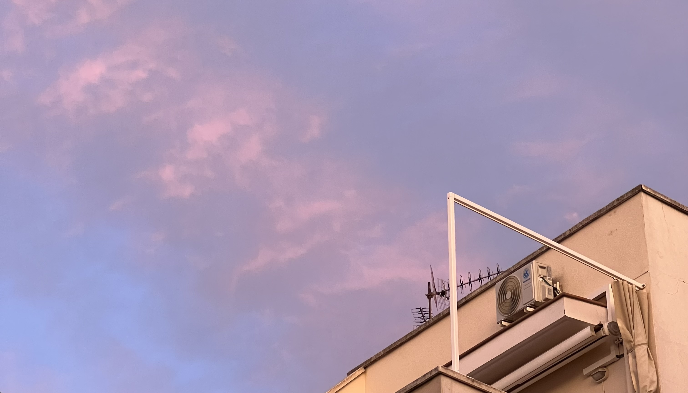
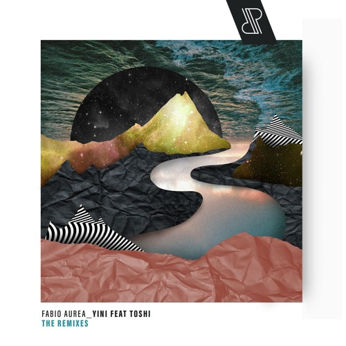

Deep house adds mood and depth to any session. Those smooth basslines and rich synths make long stretches of work feel less like a grind and more like a good time. It's immersive without stealing focus, which is perfect for those hours when you need to concentrate. I don't just feel focused listening to deep house, I actually feel happier and more motivated. It's the kind of music that makes studying feel like a little journey instead of a chore. Even when a task feels repetitive or boring, deep house has a way of keeping the energy steady, so I can push through without feeling drained. The subtle shifts in rhythm and melody make me feel like I'm moving forward, even if I'm stuck on the same page for hours.
It's also comforting in a way that few other genres are — warm tones and smooth textures that create a sense of space that makes focusing feel natural. Sometimes, I'll just leave a playlist running while I work, and by the time I look up, I've made more progress than I expected. Deep house doesn't demand attention, but it gives it in all the right ways. It's a perfect balance between motivation, enjoyment, and calm. The more I listen, the more I notice little details in the tracks that make each session feel unique. Subtle percussion hits, faint vocal snippets, or small synth flourishes keep my mind engaged even during long hours of studying. Deep house has this way of creating a consistent yet evolving soundscape — familiar enough to stay comfortable, but dynamic enough that it never feels repetitive. Every time I press play, it feels like I'm stepping into a space designed for focus, creativity, and just a little bit of fun.
Lovelee Dae is pure soulful deep house, warm chords, smooth vocals, and a groove that never gets old. It's melodic without being distracting, making it a perfect 10/10 for focus, vibes, or just sinking into the music.

The Serge Devant remix of Yini brings a dreamy, hypnotic edge to deep house. Soft percussion and layered synths make it relaxing yet engaging, an 8/10 track that's great for chill sessions or late-night studying.